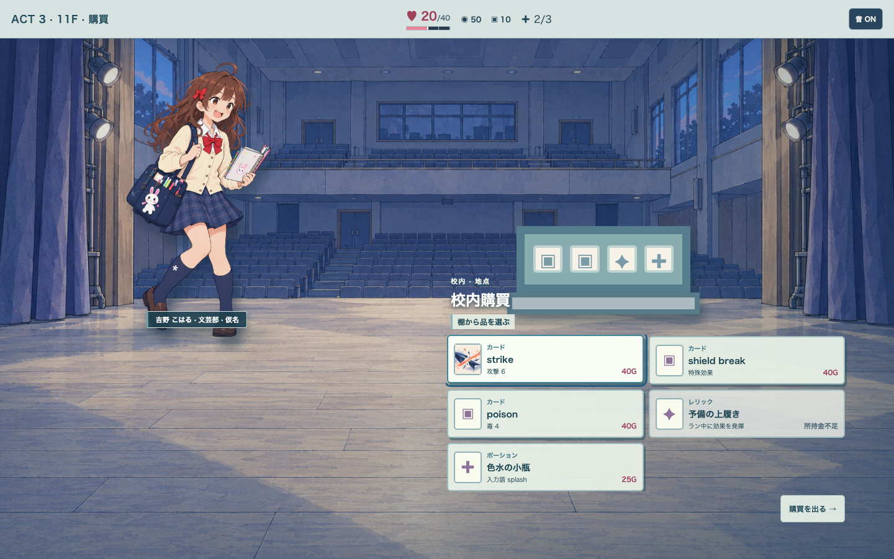
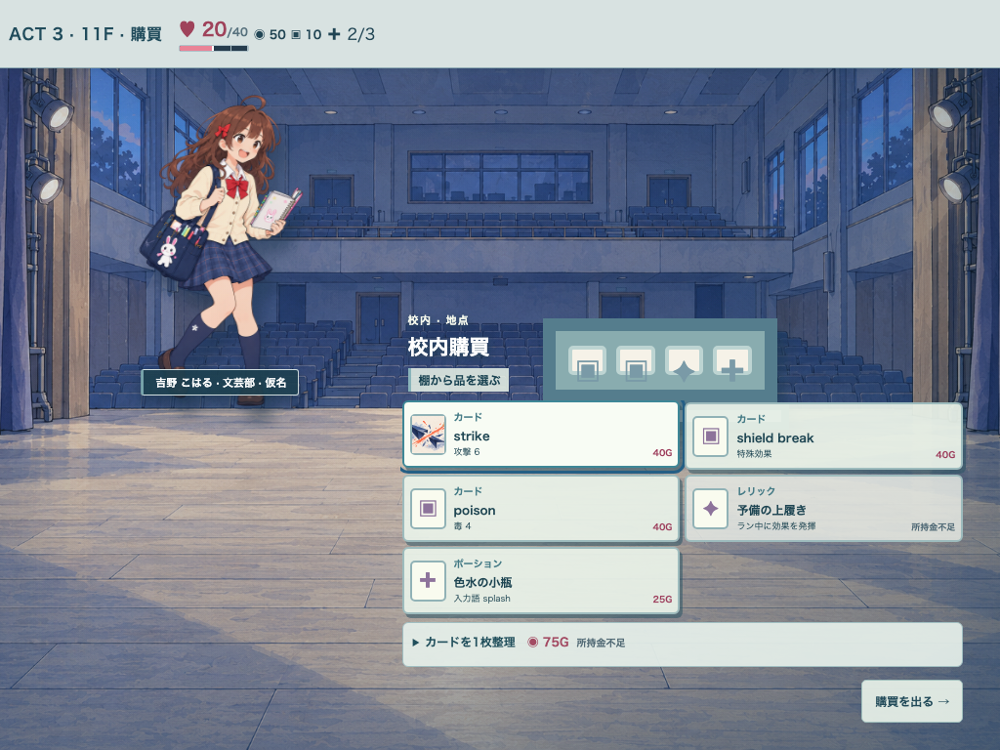
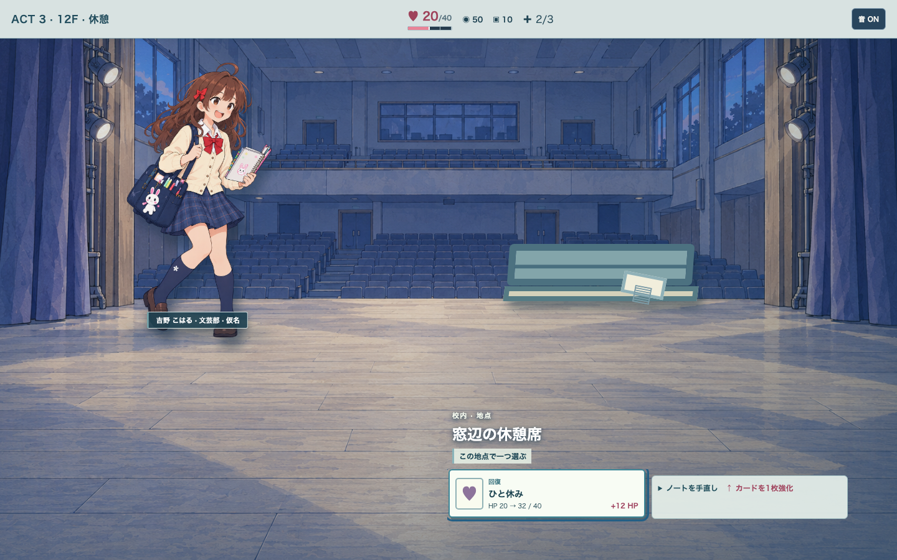
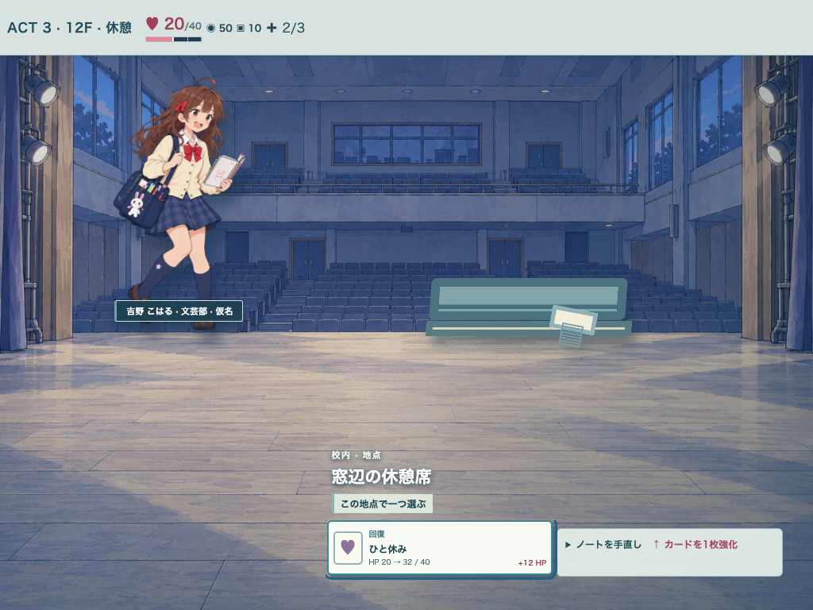
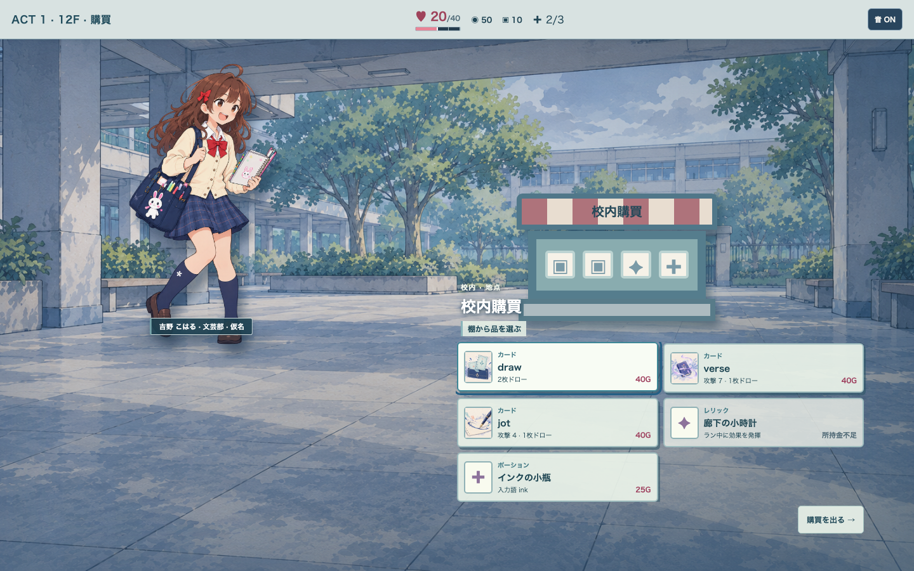
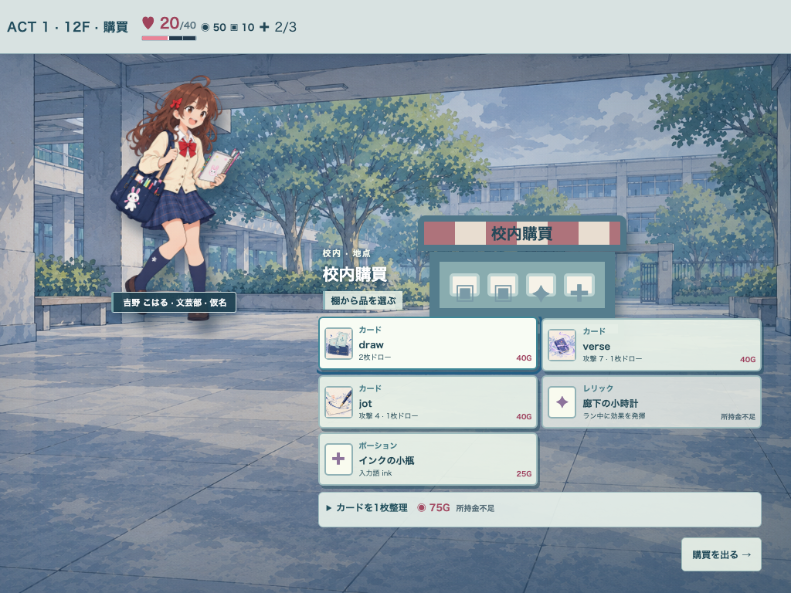
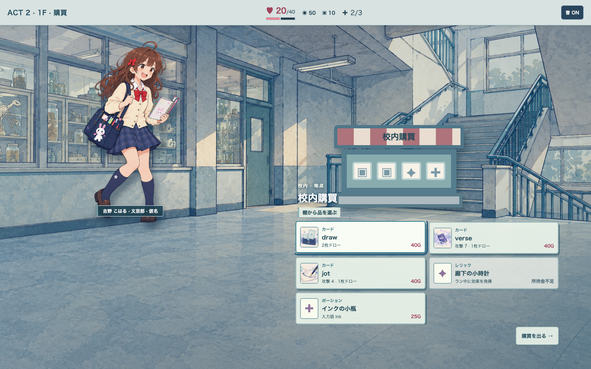
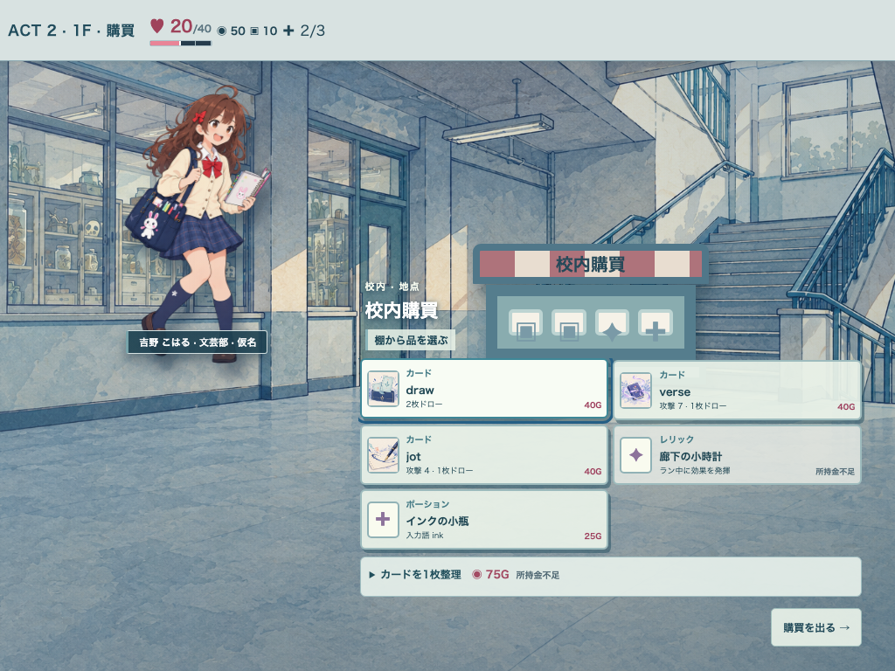

#315 同じ校内空間のA/C比較
Aは現行の大きいCSS仮物体。Cは同じ背景プレートを保ち、低彩度の光・ボス接近層と場所別の縮小配置を試す。背景/物体原画の採用候補は増えない。
保存状態から本編GameShellに到着し、再読込後に撮影。PC 1440×900 / iPad相当 1024×768。実機・自然な42地点の通し操作ではない。
seed 97 · Act 3 · 11F 購買
舞台上の購買棚。同じ地点ID・キャラ・商品。
A 現地の汎用配置 · 1440 C 場所別の縮小配置と状態層 · 1440
C 場所別の縮小配置と状態層 · 1440
A 現地の汎用配置 · 1024 C 場所別の縮小配置と状態層 · 1024
C 場所別の縮小配置と状態層 · 1024
seed 97 · Act 3 · 12F 休憩
舞台上の休憩席。同じ地点ID・キャラ・商品。
A 現地の汎用配置 · 1440 C 場所別の縮小配置と状態層 · 1440
C 場所別の縮小配置と状態層 · 1440
A 現地の汎用配置 · 1024 C 場所別の縮小配置と状態層 · 1024
C 場所別の縮小配置と状態層 · 1024
seed 42 · Act 1 · 12F 購買
屋根付き中庭の購買棚。同じ地点ID・キャラ・商品。
A 現地の汎用配置 · 1440 C 場所別の縮小配置と状態層 · 1440
C 場所別の縮小配置と状態層 · 1440
A 現地の汎用配置 · 1024 C 場所別の縮小配置と状態層 · 1024
C 場所別の縮小配置と状態層 · 1024
seed 42 · Act 2 · 1F 購買
科学棟入口の購買棚。同じ地点ID・キャラ・商品。
A 現地の汎用配置 · 1440 C 場所別の縮小配置と状態層 · 1440
C 場所別の縮小配置と状態層 · 1440
A 現地の汎用配置 · 1024 C 場所別の縮小配置と状態層 · 1024
C 場所別の縮小配置と状態層 · 1024